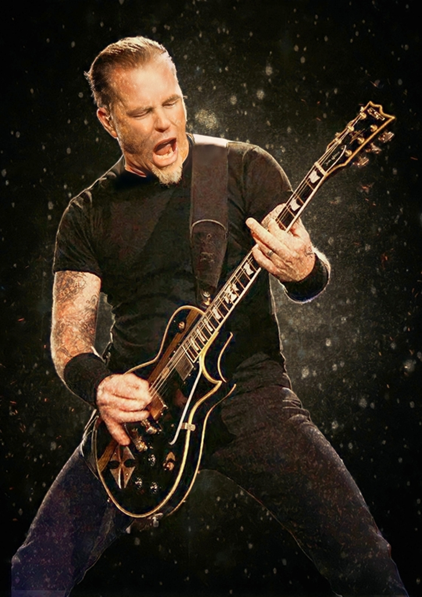

Lars Ulrich

Batería
Nacido el 26 de diciembre de 1963 en Gentofte, Dinamarca, Lars Ulrich es el motor detrás de Metallica. Hijo de un reconocido tenista, se mudó a Estados Unidos en su adolescencia, donde descubrió su pasión por el metal. Fue él quien publicó el anuncio que reunió a los primeros miembros de la banda en 1981. Ulrich es conocido por su estilo de batería enérgico y su rol como estratega del grupo: es el cerebro detrás de muchas decisiones creativas y de negocio que llevaron a Metallica a la cima mundial.
James Hetfield

Voz y Guitarra Ritmica
Nacido el 3 de agosto de 1963 en Downey, California, James Hetfield es la voz y el corazón de Metallica. Fundador junto a Lars Ulrich, su potencia vocal y su estilo de guitarra rítmica marcaron el sonido del thrash metal. Hetfield combina agresividad con sensibilidad lírica, explorando temas como la pérdida, la fe, la adicción y la redención. A lo largo de los años se ha consolidado como uno de los frontmen más respetados del rock, con una presencia escénica inconfundible y una profunda conexión con el público.
Kirk Hammet

Guitarra Principal
Nacido el 18 de noviembre de 1962 en San Francisco, California, Kirk Hammett se unió a Metallica en 1983, justo antes de la grabación de Kill ’Em All. Proveniente de la banda Exodus, aportó técnica, melodía y un sentido distintivo del solo de guitarra. Sus influencias van desde Jimi Hendrix hasta el horror clásico, lo que se refleja en su estilo expresivo y en su colección de guitarras personalizadas con motivos de películas. Hammett es un músico versátil y creativo, considerado uno de los mejores guitarristas del género.
Robert Trujillo

Bajo
Nacido el 23 de octubre de 1964 en Santa Mónica, California, Robert Trujillo se incorporó a Metallica en 2003. Antes de eso, había tocado con artistas como Suicidal Tendencies, Ozzy Osbourne e Infectious Grooves. Su llegada trajo una nueva energía al grupo, con un estilo potente, técnico y lleno de groove. Trujillo destaca por su presencia escénica intensa y su característico movimiento de cabeza mientras toca. Además, es compositor, productor y amante del surf, lo que refleja su espíritu libre dentro y fuera del escenario.